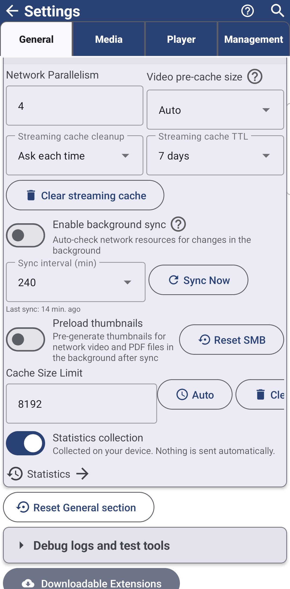

Keeping Network Folders Up to Date
Turn on a background schedule so network and cloud folders stay current on their own, preload their thumbnails ahead of time, and let a playing network video keep the full connection to itself while previews wait their turn.
Why You'll Love This
Someone else keeps adding photos to the shared folder on the home NAS, and you would rather the file list was already current when you open it than pull down to refresh every single time. FastMediaSorter can check your network and cloud resources for changes by itself, on a schedule you set, and get their thumbnails ready in the background too - so opening one feels instant.
- ✓ FastMediaSorter in the Standard, noLegal, Photos, Legacy or VR edition for background sync - not Lite, not FOSS. See The seven editions.
- ✓ At least one network folder or cloud storage resource already added - see Adding network folders and cloud storage as sources.
Let the app check for changes by itself
Open Settings, the General tab, and find Background sync, network and cache. Turn on Enable background sync - "Automatically check network resources for file changes in the background" - and set Sync interval (min) to how often it should run (four hours by default).
Want it done right now instead of waiting? Tap Sync Now. The row shows "Syncing.." while it works, then something like "Synced 5 resources successfully" once it finishes, or "Couldn't finish the sync. Try again." if it did not. Underneath, the app always shows when it last managed it - "Last sync: " or "Never synced" the first time.

Have thumbnails ready before you open the folder
In the same section, Preload thumbnails - "Pre-generate thumbnails for network video and PDF files in the background after sync" - gets previews ready right after each sync instead of only when you scroll to a file. If you would rather this only happens on Wi-Fi, turn on Wi-Fi only preload too, so it never spends mobile data quietly generating previews you have not asked to see yet.
A playing network video always gets the bandwidth
*Standard edition.* While a video from a network folder is playing, the app pauses loading previews for the files around it in the background, so the video gets the connection to itself instead of sharing it with a dozen thumbnails at once. The moment playback ends, preview loading picks back up by itself, and those paused previews load correctly rather than getting stuck as if they had failed.
What You Get
Network and cloud folders stay current on their own, on the schedule you chose, their thumbnails are often ready before you even open them, and a playing network video never has to fight background preview loading for bandwidth.
Tips and Troubleshooting
- Wondering how the app keeps network folders fast in the first place? Adding network folders and cloud storage as sources explains the file-list and thumbnail caches this sync feeds.
- Streaming cache is a separate setting. How long a played video is kept ready for offline resume lives in the same overview page, not here.
- Connecting the folders themselves? See Connecting SMB/Windows Shares and Connecting SFTP and FTP Servers.